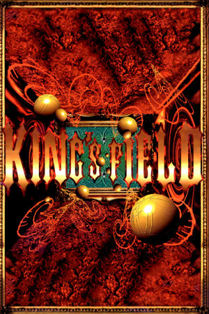

PlayStation
Originally released on December 16th, 1994, King's Field is a first-person dungeon crawler developed and published by FromSoftware, the studio's very first game. Releasing just thirteen days after the PlayStation itself, it impressed players with real-time 3D graphics at a time when most console RPGs were still sprite-based. The game takes place in the land of Verdite, where royal heir Jean Alfred Forester descends into the catacombs beneath a monastery graveyard in search of his father, exploring mazes, fighting monsters, and confronting the dark power behind the region's monstrous invasion. Its slow, deliberate, atmosphere-heavy combat and oppressive sense of isolation established the template for everything that followed. The game was never released outside Japan, though an unofficial English fan translation was released in 2006, with a later bug-fix update for real PlayStation hardware.
The naming confusion surrounding the King's Field series begins here. The sequel, King's Field II, was released in Japan on July 21st, 1995, but when it was localized, it arrived simply as "King's Field" in North America (February 1996) and Europe (March 1997). As a result, the game Western players know as King's Field is actually the Japanese King's Field II, set on the dark island of Melanat, and the original 1994 game remained exclusive to Japan. FromSoftware followed the series with King's Field III (known in the West as King's Field II in 1999) and King's Field: The Ancient City (2001). The franchise's DNA: punishing exploration, item-based progression, and bleak lore, runs directly through Demon's Souls, Dark Souls, and Elden Ring. For collectors and FromSoftware historians, the original King's Field is the foundation of the studio's entire catalog.
FromSoftware
- Official developer website.
King's Field Neocities
- A cool fan site for the King's Field franchise.
King's Field Fandom Wiki
- A fan wiki dedicated to the whole series, with maps, bestiary and item data.
DuckStation
- The best PSX emulator.
Steam Grid DB (KF)
- Contains lots of cool options for artwork that can be used in your Steam library.